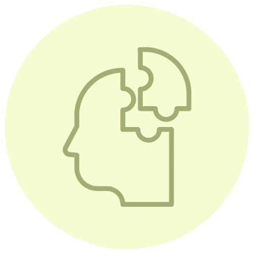
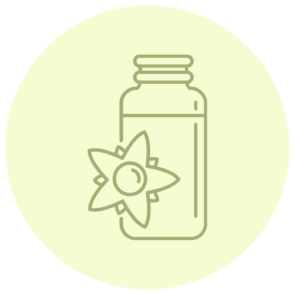
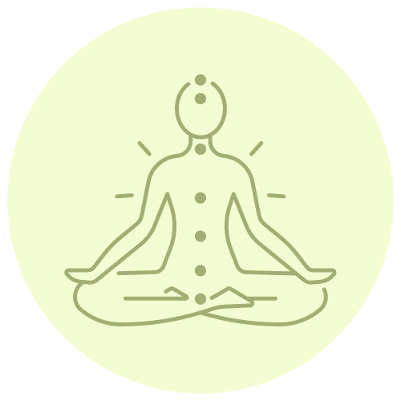
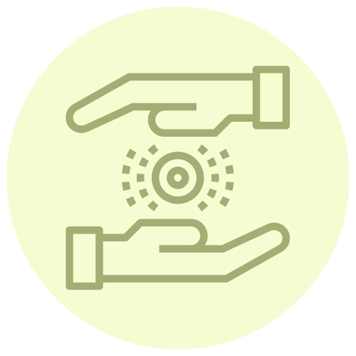
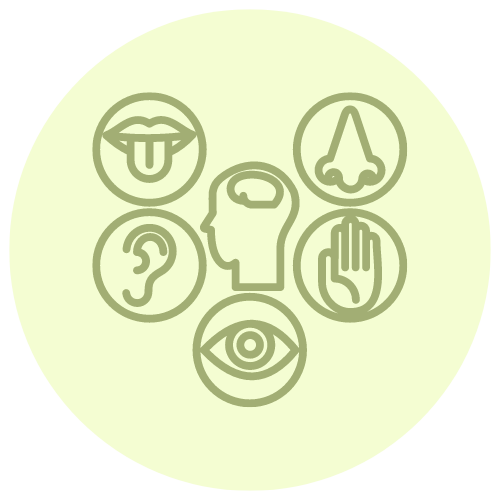

Servicios
Consultoría Psicológica
La Consultoría Psicológica es una profesión de ayuda en momentos de crisis y cambio. Promueve el autoconocimiento para el desarrollo y despliegue de potencialidades y capacidades de uno mismo. Acompaña los procesos del ser humano, ayudando encontrar sus herramientas. Trabaja la empatía, la Congruencia y la aceptación positiva incondicional. El Counseling facilita a las personas a vivir de una manera más satisfactoria y plena. Te acompaño a transitar este viaje de introspección, amor propio, autodescubrimiento, aprendizaje, y construcción del nuevo tu. #sanaciónemocional
Terapia Floral
Se trata de un sistema de 38 esencias florales descubiertas por el médico Edward Bach, bacteriólogo y patólogo, en un intento por desarrollar una terapia capaz de tratar a cada individuo como un ser completo, y no sólo a la enfermedad que padece. Buscó una flor para cada emoción específica y dividió las 38 flores en 7 grupos diferentes que si bien trataban los mismos estados emocionales de fondo, su manifestación ante el mundo era de forma diferente. El remedio se toma en forma de gotas, no interfieren en tratamientos químicos propios de la medicina convencional, y no son remedios sustitutivos de los fármacos sino, bien al contrario, ricamente complementarios. ¿Para qué está indicado? Ansiedad, depresión, procesos de duelo, adolescencia, miedos, hiperactividad, problemas de concentración, crisis de la mitad de la vida, fertilidad, vejez, preparación para la muerte, etc.
Reiki
Es una técnica cuya función es canalizar la energía que nos rodea hacia nosotros y otras personas. Se aplica mediante distintas posiciones de las manos en todo el cuerpo para actuar sobre los chakras. Reiki puede ayudar a aliviar los dolores físicos pero considera a la persona de forma global en los cuerpos físico, emocional, mental y espiritual. Esto resulta esencialmente importante para poder lograr un cambio en el interior y en el entorno más inmediato. El Reiki nos ayuda a afrontar la vida con mayor equilibrio.
Registros Akáshicos
Se describe como un plano no físico de existencia donde se guarda la memoria de todo lo que ha ocurrido, está ocurriendo y puede ocurrir en el futuro. Los registros Akáshicos son vistos como una fuente de sabiduría y conocimiento universal que pueden ser utilizados para el crecimiento personal, la sanación espiritual, y la comprensión profunda de uno mismo y del universo. Ayudan a lo siguiente: Entender el propósito de la vida y las misiones del alma. Proporcionan claridad sobre los dones y talentos innatos, así como las lecciones de vida que se deben aprender. Permiten acceder a información sobre vidas pasadas, lo cual puede ayudar a sanar traumas o patrones kármicos. Proveen guía y orientación espiritual para la evolución del alma. Y facilitan una comprensión más profunda de la vida personal, las relaciones, y los patrones recurrentes.
Terapia Sensorial
Propone a los espectadores un juego sensorial a oscuras. permitiendo una nueva percepción del espacio y tiempo. Un viaje introspectivo, que invita a nuestra imaginación a navegar por lugares imaginados, mediante música, relatos, aromas, climas y las fuentes sonoras. Desde que la obra comienza, cada participante tiene la libertad de imaginar su propia historia. Los invitamos a sumergirse en una nueva realidad donde aparecerán recuerdos, tristezas, alegrías, miedos, paz, infancia y muchos caminos que puedan desprenderse.
